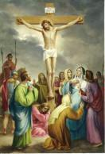

Nel nome del Padre e del Figlio / e dello Spirito Santo. / Amen.
Prima di meditare / sulla Passione di Gesù / riconosciamoci umilmente peccatori / dinanzi a Dio.
Signore Misericordioso, / mio Maestro, / Voglio seguirTi fedelmente, / Voglio imitarTi nella mia Vita / in modo sempre più perfetto. / Per questo Ti chiedo di concedermi / attraverso la meditazione della Tua / Passione / la grazia di una sempre maggiore / comprensione / dei misteri della vita spirituale. / Maria, Madre di Misericordia, / sempre fedele a Cristo, / conducimi sulla via / della Passione dolorosa / di Tuo Figlio / e intercedi per me le grazie / necessarie perché questa Via Crucis / sia fruttuosa.
Stazione I
Gesù condannato dal Sinedrio.
Ti adoriamo Cristo, e ti benediciamo. Perché con la Tua Santa Croce hai redento il mondo.
«I gran sacerdoti e l'intero Sinedrio cercavano una falsa testimonianza contro Gesù per condannarlo a morte e non ne trovarono, nonostante che si fossero presentati molti falsi testimoni» (Mt 26, 59 - 60).
Gesù: «Non meravigliarti se qualche volta vieni sospettata ingiustamente. Io per primo, per amor tuo, ho bevuto quel calice di sofferenze ingiuste. Quando ero davanti ad Erode, imploravo per te la grazia, che tu sappia innalzarti sopra il disprezzo umano e sappia seguire fedelmente le Mie orme».
S.Faustina: «Siamo sensibili alle parole ed intendiamo rispondere subito con sensibilità, e non consideriamo se sia volontà di Dio che noi rispondiamo. «L'anima silenziosa è forte; nessuna avversità le reca danno, se persevera nel silenzio. «L’anima silenziosa è idonea alla più profonda unione con Dio».
Gesù misericordioso, aiutami a saper accettare ogni giudizio umano e non lasciare che mai Ti condanni a morte nella persona del mio prossimo.
Padre nostro.
Stazione II
Gesù prende la croce sulle spalle.
Ti adoriamo Cristo, e ti benediciamo. Perché con la Tua Santa Croce hai redento il mondo.
«Allora Pilato fece prendere Gesù e lo fece flagellare. E i soldati intrecciarono una corona di spine, gliela posero sul capo, lo rivestirono di un mantello purpureo e, avanzandosi verso di lui, dicevano: "Salve, re dei Giudei!" Gesù uscì, portando la corona di spine e il mantello purpureo. E Pilato disse loro: "Ecco l'uomo!". Nel vederlo, i sommi sacerdoti e le guardie gridarono: "Crocifiggilo! Crocifiggilo"» (Gv 19, 19).
Gesù: «Non aver paura delle sofferenze. Io sono con te. Quanto più ami la sofferenza, tanto più puro sarò il tuo amore verso di Me»
S.Faustina: «Gesù, Ti ringrazio per le piccole croci quotidiane, per le contrarietà che incontro nelle mie iniziative, per il peso della vita comunitaria, per l'interpretazione distorta delle mie intenzioni, per le umiliazioni che provengono dagli altri, per il comportamento aspro verso di noi, per sospetti ingiusti, per la salute cagionevole e per le forze che vengono meno, per il ripudio della mia volontà, per l'annientamento del mio proprio io, per il mancato riconoscimento in tutto, per gli impedimenti posti a tutti i miei progetti».
Gesù misericordioso, insegnami ad apprezzare la fatica della vita, la malattia, ogni sofferenza e a portare con amore questa croce quotidiana.
Padre nostro.
Stazione III
Gesù cade per la prima volta.
Ti adoriamo Cristo, e ti benediciamo. Perché con la Tua Santa Croce hai redento il mondo.
«Noi tutti eravamo sperduti come un gregge, ognuno di noi seguiva la sua strada; il Signore fece ricadere su di lui l'iniquità di noi tutti ... Egli portava il peccato di molti, e intercedeva per i peccatori» (Is 53, 6, 12).
Gesù: «Le colpe involontarie delle anime non impediscono il Mio amore (..) né Mi sono d'ostacolo nell'unirMi ad esse; invece, le colpe anche quelle più piccole, ma volontarie, ostacolano le Mie grazie, e non posso colmare tali anime dei Miei doni».
S.Faustina: O mio Gesù, sono tanto propensa al male e questo mi costringe ad una vigilanza continua su di me, ma nulla mi scoraggia, ho fiducia nella grazia di Dio, che abbonda dov'è la più grande miseria.
Gesù misericordioso, proteggimi da ogni, anche la più piccola, ma Volontaria e consapevole infedeltà.
Padre nostro.
Stazione IV
Gesù incontra sua Madre.
Ti adoriamo Cristo, e ti benediciamo. Perché con la Tua Santa Croce hai redento il mondo.
“Ecco, questi è posto per la caduta e la risurrezione di molti in Israele e per segno di contraddizione, e a te stessa una spada trapasserà l'anima” (Lc 2, 34-35).
Gesù: «Sebbene tutte le opere che sorgono per Mia volontà siano esposte a grandi sofferenze, tuttavia considera se ce n’è stata mai qualcuna di esse esposta a maggiori ostacoli dell'opera direttamente Mia, 1’opera della Redenzione. «Non devi preoccuparti troppo delle contrarietà».
S.Faustina: «Vidi la Santissima Vergine indicibilmente bella che ... si avvicinò a me ...mi strinse a Sé e mi disse queste parole: «(..) Sii coraggiosa; non temere gli ostacoli ingannevoli, ma considera attentamente la Passione di Mio Figlio ed in questo modo vincerai».
Maria, Madre di Misericordia, stai accanto a me sempre, soprattutto nella sofferenza, così come stavi sulla Via Crucis di Tuo Figlio.
Padre nostro.
Stazione V
Gesù è aiutato da Simone di Cirene a portare la croce.
Ti adoriamo Cristo, e ti benediciamo. Perché con la Tua Santa Croce hai redento il mondo.
«Mentre lo conducevano via presero un certo Simone di Cirene, che veniva dalla campagna, e lo caricarono della croce affinché la portasse dietro a Gesù» (Lc 23, 26).
Gesù: «Permetto ... le contrarietà per aumentare i suoi meriti. Do la ricompensa non per il risultato positivo, ma per la pazienza e la fatica sopportata per Me».
S.Faustina: «O mio Gesù, Tu non dai la ricompensa per il successo dell'opera, ma per la volontà sincera e per la fatica sostenuta; per questo sono pienamente tranquilla, anche se tutte le mie iniziative ed i miei sforzi venissero annullati o non fossero mai realizzati. Se avrò fatto tutto ciò che è in mio potere, il resto non è affar mio».
Gesù, mio Signore, che ogni pensiero, parola, azione siano fatte solo per amore Tuo. Purifica le mie intenzioni.
Padre nostro.
Stazione VI
Veronica asciuga il volto di Gesù.
Ti adoriamo Cristo, e ti benediciamo. Perché con la Tua Santa Croce hai redento il mondo.
«Non ha apparenza né bellezza così da attirare i nostri sguardi, non splendore perché ce ne possiamo compiacere. «Disprezzato e reietto dagli uomini, uomo dei dolori, che ben conosce il patire, come uno davanti al quale ci si copre la faccia, era disprezzato, e non ne avevamo alcuna stima» (Is 53, 2 - 3).
Gesù: «Sappi che tutto ciò che fai di buono per qualsiasi anima lo accetto come se lo avessi fatto a Me stesso».
S.Faustina: «Un grande amore trasforma le piccole cose in cose grandi e solo l'amore dà valore alle nostre azioni».
Signore Gesù, mio Maestro, fa' che i miei occhi, le mie mani, le mie labbra, il mio cuore…siano misericordiosi. Trasformami in misericordia.
Padre nostro.
Stazione VII
Gesù cade per la seconda volta.
Ti adoriamo Cristo, e ti benediciamo. Perché con la Tua Santa Croce hai redento il mondo.
«Egli si è addossato i nostri dolori e noi lo abbiamo ritenuto castigato, percosso da Dio e umiliato» (Is 53, 4).
Gesù: «La causa delle tue cadute dipende dal fatto che conti troppo su te stessa e ti appoggi troppo poco su di Me. Sappi che da sola non puoi fare nulla. Senza un Mio aiuto particolare, non sei nemmeno capace di ricevere le Mie grazie».
S.Faustina: «Gesù, non lasciarmi sola nella sofferenza. Tu, Signore, sai quanto sono debole, sono un abisso di miseria, sono il nulla stesso. Perciò, che c'è di strano se mi lasci sola e cado? «Per questo, o Gesù, devi stare continuamente con me come una madre presso un bambino debole e anche di più».
Che la Tua grazia mi fortifichi, o Signore, affinché io non cada sempre negli stessi errori; e quando cadrò, aiutami a rialzarmi e a cantare la Tua misericordia.
Padre nostro.
Stazione VIII
Gesù incontra le donne di Gerusalemme.
Ti adoriamo Cristo, e ti benediciamo. Perché con la Tua Santa Croce hai redento il mondo.
«Lo seguiva una gran folla di popolo e di donne, che facevano cordoglio e lamento su di lui. Ma, volgendosi ad esse, Gesù disse: “Figlie di Gerusalemme, non piangete su di me, ma piangete su voi stesse e sui vostri figli”» (Lc 23, 27-28).
Gesù: «Oh, quanto Mi é gradita la fede viva! (469) Desidero che nel momento presente ci sia in voi più fede».
S.Faustina: «Prego ardentemente il Signore che si degni di fortificare la mia fede, affinché nelle grigia vita quotidiana non mi regoli secondo considerazioni umane, ma secondo lo spirito. Oh, come tutto attira l'uomo verso la terra! Ma una fede viva mantiene l'anima in una sfera più alta ed assegna all'amor proprio il posto che gli spetta, cioè l'ultimo».
Signore Misericordioso, Ti ringrazio per il santo Battesimo e la grazia della fede. Di nuovo grido: Signore, credo in Te, rafforza la mia fede!
Padre nostro.
Stazione IX
Gesù cade per la terza volta.
Ti adoriamo Cristo, e ti benediciamo. Perché con la Tua Santa Croce hai redento il mondo.
«Maltrattato, si lasciò umiliare e non apri la sua bocca; era come un agnello condotto al macello, come pecora muta di fronte ai suoi tosatori, e non apri la sua bocca. Ma al Signore è piaciuto prostrarlo con i dolori» (Is 53, 7.10).
Gesù: «Sappi che l'ostacolo più grande alla santità è lo scoraggiamento e l'inquietudine ingiustificata, che ti toglie la possibilità di esercitarti nelle virtù. (.) Io sono sempre disposto a perdonarti. Ogni volta che Me lo chiedi, esalti la Mia misericordia».
S.Faustina: «O mio Gesù, nonostante le Tue grazie, sento e vedo tutta la mia miseria. Comincio la giornata lottando e la termino lottando. «Appena rimuovo una difficoltà, al suo posto ne sorgono dieci da superare, ma non m'affliggo per questo, poiché so bene che questo è il tempo della lotta, non della pace».
Signore Misericordioso, Ti offro ciò che è soltanto mio, cioè il peccato e la debolezza umana. Ti supplico che la mia miseria scompaia nella Tua infinita misericordia. Padre nostro.
Stazione X
Gesù spogliato delle vesti.
Ti adoriamo Cristo, e ti benediciamo. Perché con la Tua Santa Croce hai redento il mondo.
«I soldati, poi, quando ebbero crocifisso Gesù, presero le sue vesti e ne fecero quattro parti, una per ciascun soldato, e la tunica. Ora quella tunica era senza cuciture, tessuta tutta d'un pezzo da cima a fondo. Perciò dissero tra loro: “Non stracciamola, ma tiriamo a sorte a chi tocca”. Così s'adempiva la scrittura» (Gv 19,23-24).
S.Faustina: «Gesù si è presentato improvvisamente davanti a me privo delle vesti, coperto di piaghe su tutto il corpo, con gli occhi inondati di sangue e di lacrime, col volto deturpato, coperto di sputi. «D'un tratto il Signore mi ha detto:
Gesù: «La sposa deve essere simile al suo Sposo».
S.Faustina: «Compresi queste parole fino in fondo. Qui non c'è possibilità di alcun dubbio. La mia somiglianza con Gesù deve avvenire attraverso la sofferenza e l'umiltà».
Gesù silenzioso e dal Cuore umile, trasforma il mio cuore secondo il Tuo.
Padre nostro.
Stazione XI
Gesù è crocifisso.
Ti adoriamo Cristo, e ti benediciamo. Perché con la Tua Santa Croce hai redento il mondo.
«I passanti lo insultavano scrollando la testa e dicendo: "Tu, che distruggi il tempio e in tre giorni lo riedifichi, salva te stesso; se sei Figlio di Dio scendi dalla croce!" «Similmente anche i sommi sacerdoti, con gli scribi e gli anziani, se ne facevano beffe, dicendo: "Salvò altri e non può salvare se stesso! ... Ha confidato in Dio, lo liberi Dio adesso se gli vuoi bene"» (Mt 27, 39-43).
Gesù: «Mia discepola, abbi un grande amore per coloro che ti fanno soffrire, fa, del bene a coloro che ti odiano».
S.Faustina: «O mio Gesù, Tu sai quanta fatica occorre per trattare sinceramente e con semplicità con coloro dai quali la nostra natura rifugge, oppure con coloro che consapevolmente od anche inconsapevolmente ci hanno fatto soffrire. «Umanamente la cosa è impossibile. In quei momenti più che in altre circostanze, cerco di scoprire Gesù, in quella persona e per amore di Gesù faccio tutto per quelle persone».
O Amore purissimo, regna totalmente nel mio cuore e fammi amare ciò che supera la misura umana.
Padre nostro.

Stazione XII
Gesù muore sulla croce.
Ti adoriamo Cristo, e ti benediciamo. Perché con la Tua Santa Croce hai redento il mondo.
«Era verso mezzogiorno quando il sole si eclissò e si fece buio su tutta la terra fino alle tre del pomeriggio ... E Gesù, gridando a gran voce, disse: "Padre, nelle tue mani rimetto lo spirito mio". Detto questo spirò » (Lc 23, 44-46). «Venuti, però, da Gesù e vedendo che era già morto, non gli spezzarono le gambe, ma uno dei soldati gli trafisse il fianco con la lancia e subito ne uscì sangue ed acqua» (Gv 19, 33-34).
Gesù: «Tutto questo per la salvezza delle anime. Rifletti, figlia Mia, su quello che fai tu per la salvezza delle anime».
S.Faustina: «Vidi Gesù inchiodato sulla croce. Dopo che Gesù era rimasto appeso per un momento, vidi una schiera di anime crocifisse come Gesù. «E vidi una terza schiera di anime e una seconda schiera di anime. «La seconda schiera non era inchiodata sulla croce, ma quelle anime tenevano saldamente la croce in mano. «La terza schiera di anime invece non era né crocifissa né teneva la croce in mano, ma quelle anime trascinavano la croce dietro di sé ed erano insoddisfatte. «Allora Gesù mi disse: Gesù: «Vedi quelle anime, che sono simili a Me anche nella sofferenza e nel disprezzo: le stesse saranno simili a Me anche nella gloria. «E quelle che assomigliano meno a Me nella sofferenza e nel disprezzo: le stesse assomiglieranno meno a Me anche nella gloria».
Gesù, Salvatore mio, nascondimi nel profondo del Tuo Cuore, perché rafforzata dalla Tua grazia possa rendermi simile a Te nell'amore della Croce e possa partecipare alla Tua gloria.
Padre nostro.
Stazione XIII
Gesù è deposto dalla croce.
Ti adoriamo Cristo, e ti benediciamo. Perché con la Tua Santa Croce hai redento il mondo.
“Alla vista di ciò che era accaduto, il centurione glorificò Dio, dicendo: "Realmente quest'uomo era giusto!". “Anche tutte le folle che erano accorse a questo spettacolo, ripensando a quanto era accaduto, se ne tornavano percuotendosi il petto. Tutti i conoscenti di Gesù assistevano da lontano” (Lc 23, 47-49).
Gesù: «L'anima che Mi è più cara è quella che crede fermamente nella Mia bontà ed ha piena fiducia in Me: le ricambio la Mia fiducia e le do tutto quello che chiede».
S.Faustina: «Ricorro alla Tua misericordia, o Dio benigno, a Te che sei il solo buono. «Benché la mia miseria sia grande e le mie colpe numerose, confido nella Tua misericordia, perché sei il Dio della misericordia e da secoli non si è mai udito, né la terra né il cielo ricordano, che un'anima fiduciosa nella Tua misericordia sia rimasta delusa».
Gesù Misericordioso, aumenta ogni giorno in me la fiducia nella Tua misericordia, perché sempre e ovunque io possa testimoniare la Tua infinita bontà e amore. Padre nostro.
Stazione XIV
Gesù è deposto nel sepolcro.
Ti adoriamo Cristo, e ti benediciamo. Perché con la Tua Santa Croce hai redento il mondo.
«Presero, dunque, il corpo di Gesù e lo avvolsero in bende, insieme con gli aromi, come usano fare i Giudei per la sepoltura. «Ora, nel luogo dove Gesù era stato crocifisso, c'era un giardino e nel giardino c'era un sepolcro nuovo, nel quale nessuno ancora era stato deposto. Là, dunque, a causa della Parasceve dei Giudei, essendo il sepolcro vicino, deposero Gesù» (Gv 19, 40-42).
Gesù: «Ancora non sei nella patria, perciò và, fortificata dalla Mia grazia e combatti per il Mio regno nelle anime umane, combatti come figlia del Re e ricordati che i giorni dell'esilio passeranno presto e con essi la possibilità di acquistare meriti per il cielo. (..) Da te Mi aspetto un gran numero di anime, che glorificheranno la Mia misericordia per tutta l'eternità».
S.Faustina: «Ogni anima che m'hai affidata, o Gesù, cercherò di aiutarla con la preghiera e con il sacrificio, affinché la Tua grazia possa operare in essa. «O grande innamorato delle anime, o mio Gesù, Ti ringrazio per la grande fiducia, poiché Ti sei degnato di affidare queste anime alle nostre cure».
Fa', o Signore misericordioso, che nessuna delle anime che mi hai affidato perisca.
Padre nostro.
Rito di conclusione
Gesù è risorto.
O mio Gesù, unica mia speranza, Ti ringrazio per questo grande libro, che hai aperto davanti agli occhi della mia anima. Il grande libro è la Tua Passione affrontata per amor mio. Da questo libro ho imparato come amare Dio e le anime. In esso sono racchiusi ... inesauribili tesori. O Gesù, quanto sono poche le anime che Ti comprendono nel Tuo martirio d'amore! ... Felice l'anima che ha capito l'amore del Cuore di Gesù!
Scenda, Signore, la tua benedizione su noi che hai riscattato con la morte del tuo Figlio; venga il perdono e la consolazione, si accresca la fede, si rafforzi la certezza della redenzione eterna.
Per Cristo nostro Signore.
Amen.
Anima di Cristo, santificami.
Corpo di Cristo, salvami.
Sangue di Cristo, inebriami.
Acqua del costato di Cristo, lavami.
Passione di Cristo, confortami.
O buon Gesù, esaudiscimi.
Dentro le tue piaghe, nascondimi.
Non permettere che io mi separi da te.
Dal nemico maligno, difendimi
Nell'ora della mia morte chiamami.
Fa’ che io venga a te per lodarti
con i tuoi Santi nei secoli dei secoli.
Amen.
(S. Ignazio di Loyola)
Breve pausa di silenzio
Preghiamo.
O Dio che nel tuo misterioso disegno di salvezza hai voluto continuare la passione del tuo Figlio nelle membra piagate del suo corpo, che è la Chiesa, fa’ che, uniti alla Madre Addolorata ai pedi della Croce, impariamo a riconoscere e a servire con amore premuroso il Cristo, sofferente nei fratelli.
Per Cristo nostro Signore.
Amen.
Alla fine: Padre nostro, Ave Maria, Gloria. (Secondo le intenzioni del Sommo Pontefice).